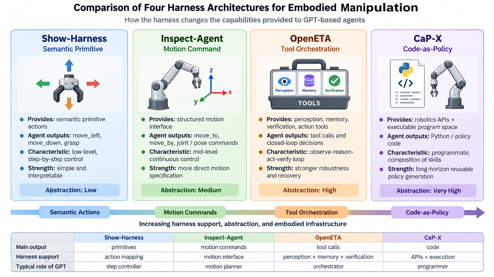
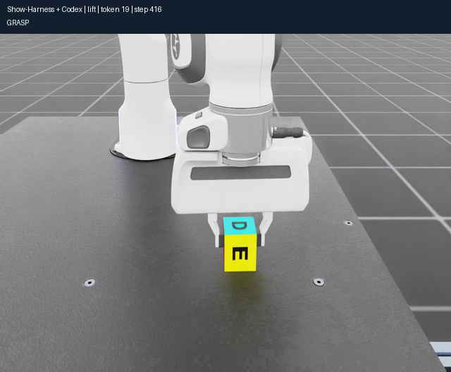
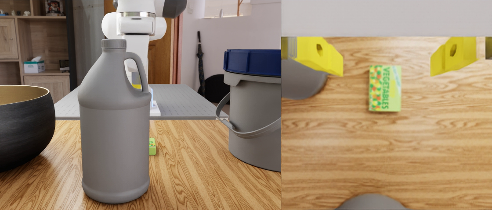
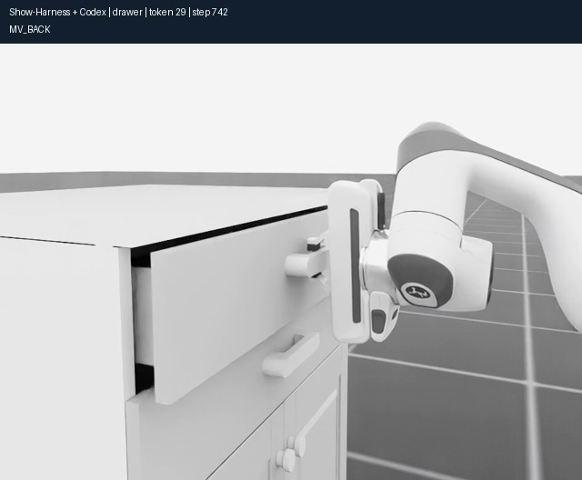
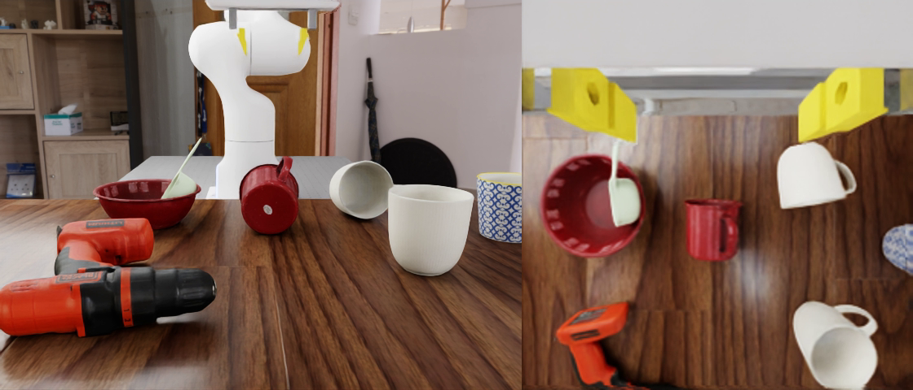
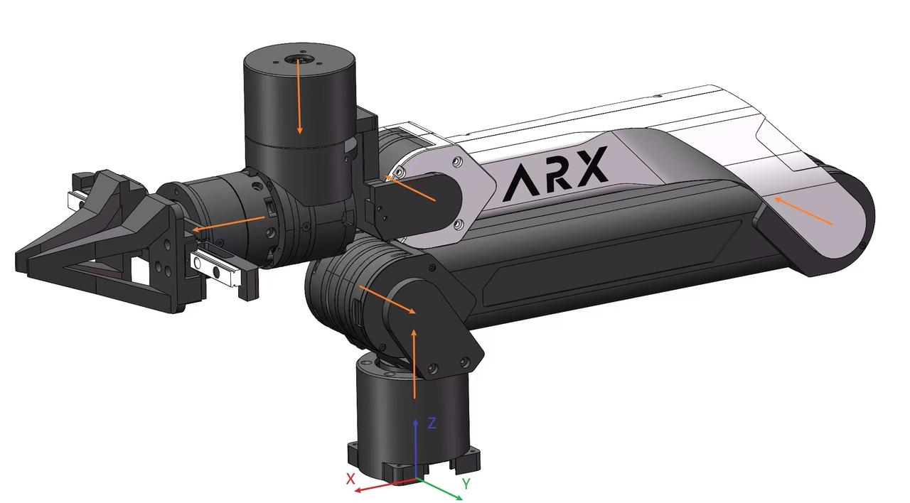
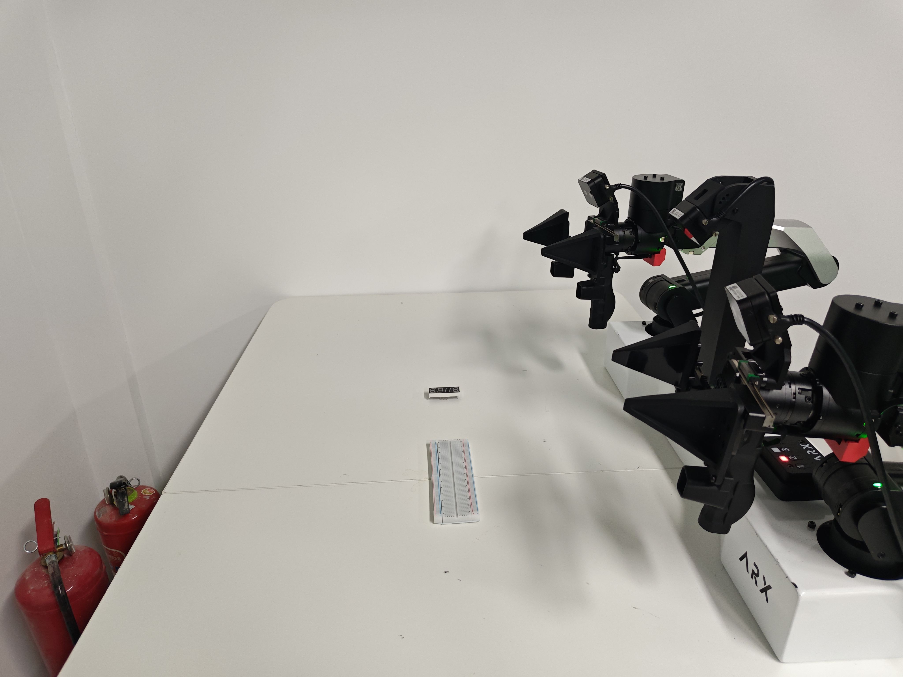

<style>
  .gpt6-setting-row { margin: 2rem 0; }
  .gpt6-setting-pair { display: grid; grid-template-columns: repeat(2, minmax(0, 1fr)); gap: 1rem; }
  .gpt6-setting-pair img {
    display: block; width: 100%; aspect-ratio: 16 / 9; object-fit: cover; border-radius: 0;
  }
  .gpt6-setting-row figcaption { margin-top: 0.7rem; color: #475569; line-height: 1.55; }
</style>

<article class="gpt6-page" data-lang="en">
  <p class="gpt6-kicker">Embodied AI / Research report</p>
  <h1>GPT-6 Harness Report</h1>
  <p class="gpt6-subtitle">How the harness turns a capable model into an embodied agent.</p>

  <section class="gpt6-section">
    <h2>Introduction</h2>
    <p><a href="https://openai.com/index/gpt-6-astra/">OpenAI released GPT-6 Astra on September 3, 2026</a>. A recent <a href="https://robodojo-benchmark.com/report/gpt-6-astra-eval">RoboDojo report</a> has already demonstrated its embodied capability in simulation: with a fixed motion harness and no pretrained VLA, Astra acted directly as a robot policy on a 42-task benchmark. Yet its inference efficiency and ability to generalize to real-world settings have not been comprehensively analyzed. Existing harness architectures are designed to provide perception, motion interfaces, feedback, and other support for embodied agents. <strong>What advantages and limitations do these architectures have when paired with a substantially stronger foundation model?</strong> That question remains insufficiently explored.</p>
    <p>This report focuses on the harness layer between model and robot. It introduces four representative architectures and examines how their different action interfaces and supporting mechanisms might expose, constrain, or stabilize the embodied capabilities that Astra has already shown in simulation. The simulation evidence motivates this comparison; it does not by itself establish reliable real-world performance.</p>
  </section>

  <section class="gpt6-section">
    <h2>1. Four types of embodied harness</h2>
    <p>A harness is the interface and execution environment between a model and a robot. The four examples below differ mainly in the capabilities exposed to the agent and the form of action the agent produces. This is a working taxonomy for this report, not an exhaustive classification of robotics systems.</p>

    <div class="gpt6-table-scroll">
      <table class="gpt6-table">
        <thead>
          <tr>
            <th scope="col">Harness type</th>
            <th scope="col">Representative</th>
            <th scope="col">Capabilities given to the agent</th>
            <th scope="col">Typical agent output</th>
            <th scope="col">Characteristic</th>
          </tr>
        </thead>
        <tbody>
          <tr>
            <th scope="row">Show-Harness</th>
            <td>Show-Harness</td>
            <td>Semantic primitive actions</td>
            <td><code>move_left</code>, <code>move_down</code>, <code>grasp</code></td>
            <td>Lowest abstraction level; the LLM participates frequently in control.</td>
          </tr>
          <tr>
            <th scope="row">Inspect Robots</th>
            <td>Inspect-Agent</td>
            <td>Structured motion commands</td>
            <td><code>move_to</code>, <code>move_by</code>, joint / pose commands</td>
            <td>Mid-level motion control; actions are more continuous and direct.</td>
          </tr>
          <tr>
            <th scope="row">OpenETA</th>
            <td>OpenETA</td>
            <td>Perception tools, motion tools, memory, and verification</td>
            <td>Tool calls</td>
            <td>A fuller embodied-agent loop, emphasizing observation and recovery.</td>
          </tr>
          <tr>
            <th scope="row">CaP-X</th>
            <td>CaP-X</td>
            <td>Robotics APIs and a program execution environment</td>
            <td>Python / code policy</td>
            <td>The LLM composes perception, planning, IK, and control by writing programs.</td>
          </tr>
        </tbody>
      </table>
    </div>

    <figure class="gpt6-figure">
      
      <figcaption>Figure 1. Four embodied harness architectures.</figcaption>
    </figure>
  </section>

  <section class="gpt6-section">
    <h2>2. Experimental settings</h2>
    <p>We consider three settings: vertical grasping and side grasping in simulation, followed by operation on a physical robot.</p>
    <p><strong>Robot platforms.</strong> The simulation uses a Franka Panda arm in RoboLab / Isaac Sim; the cube-lifting and drawer-opening scenes use Franka Panda tasks in Isaac Lab. The physical setup on <code>robot</code> is a dual-arm ARX5 (X5-2025 configuration), with a head camera and left/right wrist cameras. The real-robot task is to pick up an electronic component and place it on a breadboard, using the right arm while the left remains still.</p>

    <figure class="gpt6-setting-row">
      <div class="gpt6-setting-pair">
        
        
      </div>
      <figcaption>Figure 2. Vertical grasping: (a) lift a cube; (b) pick up a green block.</figcaption>
    </figure>

    <figure class="gpt6-setting-row">
      <div class="gpt6-setting-pair">
        
        
      </div>
      <figcaption>Figure 3. Side and non-vertical grasping: (a) pull an upper drawer; (b) turn a sideways white mug upright.</figcaption>
    </figure>

    <figure class="gpt6-setting-row">
      <div class="gpt6-setting-pair">
        
        
      </div>
      <figcaption>Figure 4. Physical setup: (a) ARX5 arm structure; (b) electronic-component placement task setting.</figcaption>
    </figure>
  </section>
</article>

<article class="gpt6-page" data-lang="zh">
  <p class="gpt6-kicker">具身智能 / 研究报告</p>
  <h1>GPT-6 Harness Report</h1>
  <p class="gpt6-subtitle">Harness 如何把强模型变成具身 Agent。</p>

  <section class="gpt6-section">
    <h2>引言</h2>
    <p><a href="https://openai.com/index/gpt-6-astra/">OpenAI 于 2026 年 9 月 3 日发布 GPT-6 Astra</a>。近期 <a href="https://robodojo-benchmark.com/report/gpt-6-astra-eval">RoboDojo 报告</a>已验证其在仿真环境中的具身能力：Astra 通过固定的 motion harness、在不依赖预训练 VLA 的情况下，直接作为机器人策略参与了 42 个任务的评测。然而，它的推理效率及其对真实场景的泛化能力，仍缺少完整的系统分析。已有的 Harness 架构旨在为具身 Agent 提供感知、运动接口、反馈等支持；但<strong>当基础模型的能力显著增强时，这些架构各有什么优势和局限？</strong> 这一问题尚未得到充分阐述。</p>
    <p>本报告因此聚焦模型与机器人之间的 Harness 层，介绍四种代表性架构，并讨论不同的动作接口和支撑机制如何释放、约束或稳定 Astra 已在仿真中展现的具身能力。仿真证据为这一比较提供了动机，但不能单独证明模型在真实场景中已经能够可靠运行。</p>
  </section>

  <section class="gpt6-section">
    <h2>第一章：具身 Harness 的四种形态</h2>
    <p>Harness 是模型与机器人之间的接口及执行环境。下面四种代表方案的核心区别，是提供给 Agent 的能力，以及 Agent 最终输出的动作形式。这是本报告使用的工作性分类，并非对所有机器人系统的穷尽划分。</p>

    <div class="gpt6-table-scroll">
      <table class="gpt6-table">
        <thead>
          <tr>
            <th scope="col">Harness 类别</th>
            <th scope="col">代表方案</th>
            <th scope="col">提供给 Agent 的主要能力</th>
            <th scope="col">Agent 主要输出</th>
            <th scope="col">特点</th>
          </tr>
        </thead>
        <tbody>
          <tr>
            <th scope="row">Show-Harness</th>
            <td>Show-Harness</td>
            <td>语义化元动作</td>
            <td><code>move_left</code>、<code>move_down</code>、<code>grasp</code> 等</td>
            <td>最低层抽象，LLM 频繁参与控制。</td>
          </tr>
          <tr>
            <th scope="row">Inspect Robots</th>
            <td>Inspect-Agent</td>
            <td>结构化运动指令</td>
            <td><code>move_to</code>、<code>move_by</code>、joint / pose 指令</td>
            <td>中层运动控制，动作更连续、更直接。</td>
          </tr>
          <tr>
            <th scope="row">OpenETA</th>
            <td>OpenETA</td>
            <td>感知工具 + 运动工具 + memory + verification</td>
            <td>Tool calls</td>
            <td>Harness 提供完整 embodied agent 能力，强调闭环观察与恢复。</td>
          </tr>
          <tr>
            <th scope="row">CaP-X</th>
            <td>CaP-X</td>
            <td>Robotics API + 程序执行环境</td>
            <td>Python / Code Policy</td>
            <td>LLM 通过写程序组合感知、规划、IK、控制等模块。</td>
          </tr>
        </tbody>
      </table>
    </div>

    <figure class="gpt6-figure">
      
      <figcaption>图 1：四类具身 Harness 架构。</figcaption>
    </figure>
  </section>

  <section class="gpt6-section">
    <h2>第二章：实验设置</h2>
    <p>实验设置分为三类：仿真中的垂直夹取和侧向夹取，以及物理真机操作。</p>
    <p><strong>机械臂平台。</strong>仿真使用 RoboLab / Isaac Sim 中的 Franka Panda 机械臂；抬方块、开抽屉场景使用 Isaac Lab 的 Franka Panda 任务。<code>robot</code> 主机上的真机为双臂 ARX5（X5-2025 配置），配有头部相机和左右腕部相机。真机任务是使用右臂夹取电子元件并放置在面包板上，左臂保持不动。</p>

    <figure class="gpt6-setting-row">
      <div class="gpt6-setting-pair">
        
        
      </div>
      <figcaption>图 2：垂直夹取——(a) 抬起方块；(b) 抓起绿色物体。</figcaption>
    </figure>

    <figure class="gpt6-setting-row">
      <div class="gpt6-setting-pair">
        
        
      </div>
      <figcaption>图 3：侧向与非竖直夹取——(a) 拉开上层抽屉；(b) 扶正侧倒白杯。</figcaption>
    </figure>

    <figure class="gpt6-setting-row">
      <div class="gpt6-setting-pair">
        
        
      </div>
      <figcaption>图 4：真机平台——(a) ARX5 机械臂结构图；(b) 电子元件放置任务场景。</figcaption>
    </figure>
  </section>
</article>
